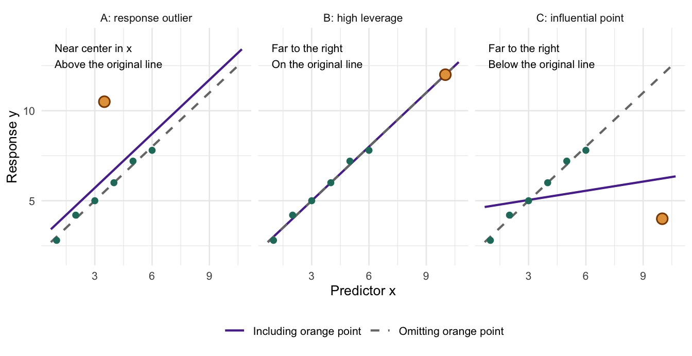
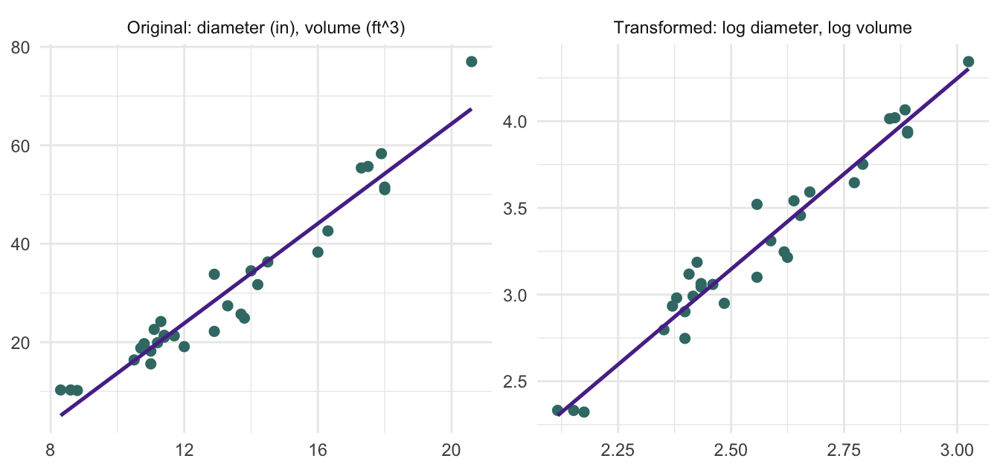
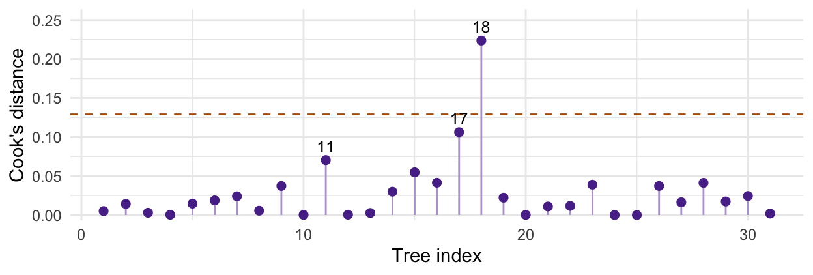
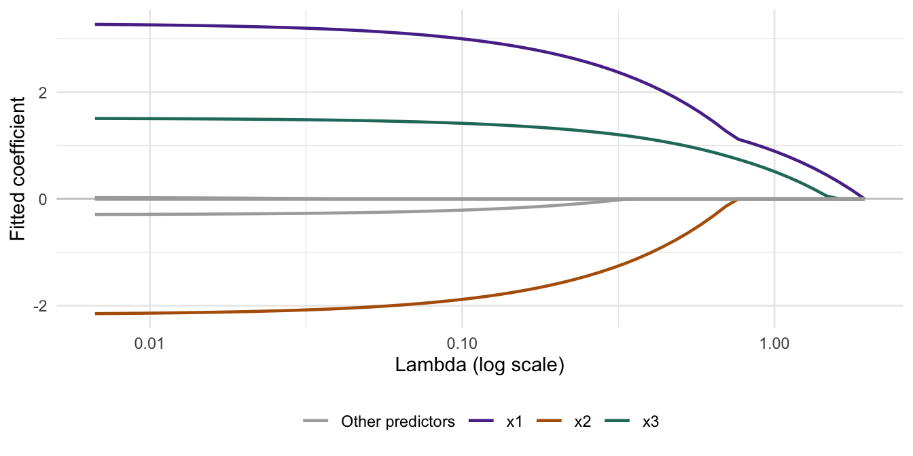
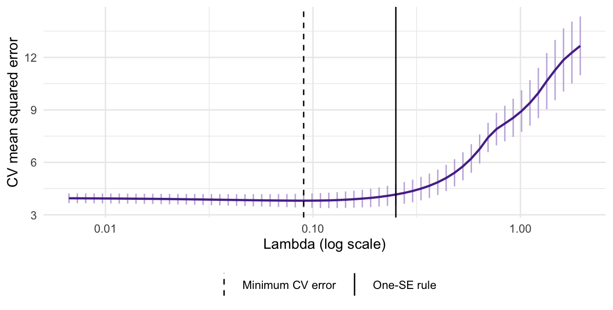

6 Transformations and Variable Selection
Chapter 5 built models from predictors, groups, and interactions. Its final example also showed that straight lines can miss the pattern. We now ask which functions of the predictors to use, and which terms to retain. We begin by distinguishing outliers, leverage, and influence, and use Cook’s distance to assess whether individual observations drive a fit. We then study transformations and recheck the revised model before selecting terms. Diagnostics assess model adequacy and sensitivity; transformations change the model representation; selection decides which terms remain.
Learning Objectives
By the end of this chapter, students should be able to:
- distinguish outliers, high leverage, and influence, and use Cook’s distance for a sensitivity check;
- distinguish a curved relationship from a model nonlinear in its parameters;
- choose, fit, and check a suitable transformation;
- interpret predictions after transforming the response;
- carry out forward selection, backward elimination, and stepwise selection;
- explain ridge and lasso, and choose a penalty using cross-validation;
- separate model development from final prediction assessment.
NoteQuick Recap: What We Will Use
Let \(n\) be the number of observations and \(p\) the number of coefficient columns, including the intercept when present. For the formulas below, assume \(\mathbf X\) has full column rank and \(n>p\).
Model and design matrix — Chapter 1. Write \(\mathbf Y=\mathbf X\boldsymbol\beta+\boldsymbol\varepsilon\), with mean \(\boldsymbol\mu=\mathbf X\boldsymbol\beta\) and \(\mathbb E(\boldsymbol\varepsilon\mid\mathbf X)=\mathbf0\). Each row describes one observation; each column multiplies one coefficient. Count columns, not variable names. Changing the columns changes the set of mean patterns the model can represent.
OLS, fitted values, and residuals — Chapter 2. OLS minimizes \(\mathrm{SSE}=\mathbf e^\top\mathbf e\):
\[ \hat{\boldsymbol\beta}=(\mathbf X^\top\mathbf X)^{-1}\mathbf X^\top\mathbf Y, \qquad \hat{\mathbf Y}=\mathbf H\mathbf Y, \qquad \mathbf e=(\mathbf I-\mathbf H)\mathbf Y. \]
The hat matrix is \(\mathbf H=\mathbf X(\mathbf X^\top\mathbf X)^{-1}\mathbf X^\top\), and \(\mathbf X^\top\mathbf e=\mathbf0\). Residuals are observed deviations from the fitted mean; they are not the unobserved errors \(\boldsymbol\varepsilon\).
Assumptions and uncertainty — Chapter 3. The normal model assumes \(\boldsymbol\varepsilon\mid\mathbf X\sim N(\mathbf0,\sigma^2\mathbf I)\): a correct mean, independent normal errors, and constant variance. OLS itself does not require normality, but our exact \(t\) and \(F\) inference uses it. Estimate \(\sigma^2\) by \(s^2=\mathrm{SSE}/(n-p)\); estimated coefficient covariance is \(s^2(\mathbf X^\top\mathbf X)^{-1}\). Nearly dependent columns can make coefficient estimates unstable. These inference results concern a specified model.
Model comparison and fit — Chapter 4. For nested reduced and full models fitted to the same observations and response, test the added terms jointly using
\[ F=\frac{(\mathrm{SSE}_R-\mathrm{SSE}_F)/(p_F-p_R)}{\mathrm{SSE}_F/(n-p_F)} \quad\text{with null degrees of freedom }(p_F-p_R,\ n-p_F). \]
Adding columns cannot increase SSE; with an intercept, training \(R^2\) cannot decrease. Adjusted \(R^2\) penalizes model size and can decrease. Neither fit summary alone measures prediction performance on new observations.
Coefficient meanings and model structure — Chapter 5. An additive slope compares means while holding other predictors fixed. A \(g\)-level factor uses an intercept plus \(g-1\) indicators, or all \(g\) indicators without an intercept. An interaction makes a predictor’s contribution depend on another predictor; retain its lower-order terms. Centering or changing the reference group changes coefficient meanings but preserves fitted values when the equivalent model is retained.
6.1 Outliers, leverage, and influential observations
Start with a fitted model and ask: does an unusual observation substantially change what we conclude? A response far from its fitted mean, an unusual predictor value, and a point that moves the fitted line describe different features. Distinguishing them helps us decide what to inspect before changing the model or selecting variables. A pattern shared by many observations and a fit pulled by one unusual point call for different investigations.
Example 6.1 (Three Points, Three Different Stories) Look at the lines first. Every panel starts with the same six green observations, whose fitted line is \(\hat y=2+x\). We add one orange point at a time. The dashed gray line omits that point; the solid purple line includes it. Compare the point’s vertical position, its horizontal position, and how much the line moves.
- A: unusual response, ordinary predictor value. At \(x=3.5\), the original line predicts 5.5, but the orange response is 10.5. This point is near the center of the predictor values and far above the line. It mainly shifts the line upward.
- B: high leverage without a change in the fitted line. The new \(x=10\) lies beyond the original range of 1 to 6. Its response, 12, lies exactly on the extension of the original line. The point has the potential to pull the fit, but here the two lines coincide.
- C: high leverage with a large change in the fitted line. The predictor is again \(x=10\), but the response is 4 instead of 12. The point pulls down the right side of the line, substantially reducing the estimated slope.
These descriptions can overlap. C is also a high-leverage point; its actual effect on the fit makes it influential. A also affects the fit, even though its effect on the slope differs from C’s.
Now put numbers on the changes. The six baseline observations are:
| Variable | Obs. 1 | Obs. 2 | Obs. 3 | Obs. 4 | Obs. 5 | Obs. 6 |
|---|---|---|---|---|---|---|
| x | 1.0 | 2.0 | 3.0 | 4.0 | 5.0 | 6.0 |
| y | 2.8 | 4.2 | 5.0 | 6.0 | 7.2 | 7.8 |
Fit lm(y ~ x) to the baseline data, then add A, B, or C separately. The table reports the intercept, slope, fitted mean at \(x=6\), and residual standard deviation \(s\). Removing the orange point from any of the three augmented datasets returns the baseline fit.
| Fit | Intercept | Slope | Fitted mean at 6 | Residual SD |
|---|---|---|---|---|
| Baseline | 2.000 | 1.000 | 8.000 | 0.200 |
| Baseline + A | 2.714 | 1.000 | 8.714 | 2.078 |
| Baseline + B | 2.000 | 1.000 | 8.000 | 0.179 |
| Baseline + C | 4.532 | 0.170 | 5.553 | 1.899 |
- A changes the intercept and the noise estimate. The intercept rises from 2.000 to 2.714, while the slope stays at 1.000. Here \(x=3.5\) is the baseline mean of \(x\), so this added point does not change the slope. The residual SD rises from 0.200 to 2.078: an outlying response can inflate estimated noise even when the slope is unchanged.
- B leaves both coefficient estimates unchanged. The fitted mean at \(x=6\) remains 8.000. High leverage alone does not imply that a point changes the estimated line; it can still affect the precision of the estimates.
- C changes the estimated relationship. The slope falls from 1.000 to 0.170 and the intercept rises to 4.532. The fitted mean at \(x=6\) falls from 8.000 to 5.553. This is a substantial change in a prediction within the original predictor range, not just at the distant added point.
The plots and coefficient comparisons motivate the following definitions. We then quantify the movement of the fitted line with Cook’s distance.
Definition 6.1 (Outlier, Leverage, and Influence)
- A response outlier has an unusual response given its predictor values and the specified model. A large volume alone does not make a large tree an outlier.
- A high-leverage observation has an unusual configuration of predictor values. Its leverage is \(h_{ii}\), diagonal entry \(i\) of the hat matrix from Chapter 2, \(\mathbf H=\mathbf X(\mathbf X^\top\mathbf X)^{-1}\mathbf X^\top\). Leverage depends on \(\mathbf X\), not on the observed responses.
- An influential observation changes the fitted coefficients or predictions substantially when omitted. Influence concerns the sensitivity of the analysis, rather than unusualness alone.
Put residuals on a comparable scale. Use \(p\) for the number of coefficients including the intercept, and \(s^2=\mathrm{SSE}/(n-p)\). Under the model with \(\operatorname{Var}(\boldsymbol\varepsilon\mid\mathbf X)=\sigma^2\mathbf I\), the residual geometry from Chapter 2 gives
\[ \operatorname{Var}(e_i\mid\mathbf X)=\sigma^2(1-h_{ii}), \qquad r_i=\frac{e_i}{s\sqrt{1-h_{ii}}}. \]
The standardized residual \(r_i\) accounts for unequal residual variances; it does not make residuals independent. A high-leverage point can pull the fit toward itself, leaving a deceptively small raw residual. For outlier assessment, the externally studentized residual \(t_i=e_i/\{s_{(-i)}\sqrt{1-h_{ii}}\}\) instead uses the residual standard deviation estimated without observation \(i\), so that observation does not inflate its own variance estimate. The deleted variance estimate requires \(n-p-1>0\). R provides rstandard(fit) and rstudent(fit), respectively. R diagnostic documentation.
Since \(\sum_i h_{ii}=p\), average leverage is \(p/n\). This gives context for judging an unusually large \(h_{ii}\); leverage measures the potential to influence a fit, not the realized change.
Definition 6.2 (Cook’s Distance) Let \(\hat{\boldsymbol\beta}_{(-i)}\) be the OLS estimate after omitting observation \(i\), and let \(\hat Y_{j(-i)}=\mathbf x_j^\top\hat{\boldsymbol\beta}_{(-i)}\) be its prediction at each of the original \(n\) predictor rows, including row \(i\). Cook’s distance is
\[ D_i=\frac{\sum_{j=1}^n(\hat Y_j-\hat Y_{j(-i)})^2}{p s^2} =\frac{e_i^2}{p s^2}\frac{h_{ii}}{(1-h_{ii})^2} =\frac{r_i^2}{p}\frac{h_{ii}}{1-h_{ii}}. \]
Here \(s^2\) comes from the full fit. These formulas apply to ordinary unweighted least squares with full column rank and positive residual degrees of freedom; the deleted fit must also be estimable (\(h_{ii}<1\)).
Read the two parts. The first expression asks how much the whole fitted mean vector moves after deletion, measured relative to the noise scale and model size. The last combines response discrepancy (\(r_i^2\)) with leverage (\(h_{ii}/(1-h_{ii})\)). Thus the largest residual need not produce the largest Cook’s distance. \(D_i\) is dimensionless; it is not a p-value. Cook’s original article.
Apply Cook’s distance to the same three points. In each augmented fit, \(n=7\) and \(p=2\). The diagnostics for its orange point are:
| Point | Leverage | Standardized residual | Cook’s distance |
|---|---|---|---|
| A | 0.143 | 2.228 | 0.414 |
| B | 0.721 | 0.000 | 0.000 |
| C | 0.721 | -2.226 | 6.395 |
A and C have almost the same absolute standardized residual, but C has much higher leverage and a much larger Cook’s distance: 6.395 versus 0.414. B has the same leverage as C, yet its zero residual gives zero Cook’s distance. These numbers quantify what the plots and coefficient table already showed: influence depends on both the response discrepancy and the predictor position.
Exercise 6.1 (Which Point Moves the Fit More?) In a model with \(p=2\), point A has \(r_A=3\) and \(h_{AA}=0.05\); point B has \(r_B=1\) and \(h_{BB}=0.50\). Compute their Cook’s distances. Which point is more influential by this measure? Does either number establish a data error?
Solution 6.1. \(D_A=(9/2)(0.05/0.95)\approx0.237\), while \(D_B=(1/2)(0.50/0.50)=0.50\). B has greater influence despite its smaller standardized residual. Neither value establishes an error or justifies deletion; inspect the observations and the scientific consequences of the changed fit.
ImportantInvestigate a flag; do not delete by a cutoff
Values such as \(|t_i|>2\), \(h_{ii}>2p/n\), or \(D_i>4/n\) are rough screening guides, not universal tests or deletion rules. Check units, transcription, measurement conditions, and omitted structure; a valid unusual observation may be scientifically valuable. Compare fits and relevant predictions with and without a flagged case, and explain any exclusion. Inspect related groups of observations too: several unusual cases can mask one another in single-case diagnostics.
Next, ask whether the mean pattern needs a different functional form. Investigating individual observations and checking the overall shape are complementary steps.
6.2 A curved relationship can still be a linear model
Definition 6.3 (Linear in the Parameters) A regression model is linear in its parameters when it can be written as \(Y_i=\beta_0+\sum_{j=1}^d\beta_j h_j(\mathbf x_i)+\varepsilon_i\), where the functions \(h_j\) are specified independently of the unknown coefficients. The design row is \((1\;h_1(\mathbf x_i)\;\cdots\;h_d(\mathbf x_i))\); the response need not be a straight-line function of the original predictors.
| Relationship | Model fitted by least squares | What changes? |
|---|---|---|
| Curvature in \(x\) | \(Y=\beta_0+\beta_1x+\beta_2x^2+\varepsilon\) | Add a polynomial column; retain the response scale. |
| Diminishing change, \(x>0\) | \(Y=\beta_0+\beta_1\log x+\varepsilon\) | Transform a predictor. |
| Exponential growth, \(Y>0\) | \(\log Y=\beta_0+\beta_1x+\varepsilon\) | Transform the response; specify errors on the log scale. |
| Power relationship, \(Y,x>0\) | \(\log Y=\beta_0+\beta_1\log x+\varepsilon\) | Transform both variables. |
In R, write a quadratic as lm(y ~ x + I(x^2), data = dat); I() makes the square arithmetic. For a log-log model, use lm(log(y) ~ log(x), data = dat). An interaction from Chapter 5 is another constructed column, \(x_1x_2\).
ImportantTransform the statistical model, including its errors
\(Y=a\exp(bx)\exp(\varepsilon)\) becomes \(\log Y=\log a+bx+\varepsilon\). In contrast, taking logs of \(Y=a\exp(bx)+\varepsilon\) does not produce that same additive-error model. Likewise, a saturation model such as \(Y=ax/(b+x)+\varepsilon\) is nonlinear in \(a,b\); reciprocating it changes the errors and may be inappropriate. Some problems need nonlinear least squares or another response model, not forced linearization.
Exercise 6.2 (Linear in Which Sense?) Which can be fitted by lm() using known predictor columns?
- \(Y=\beta_0+\beta_1\sqrt{x}+\varepsilon\), with \(x\geq0\).
- \(Y=\beta_0+\beta_1x^{\beta_2}+\varepsilon\), with unknown \(\beta_2\).
- \(\log Y=\beta_0+\beta_1x+\varepsilon\), with \(Y>0\).
Solution 6.2. Models 1 and 3 are linear in their coefficients. Model 2 has an unknown exponent inside the predictor function; ordinary lm() cannot estimate all three coefficients as written. Model 3 models the conditional mean of \(\log Y\), not directly the conditional mean of \(Y\).
6.3 Choose a transformation, fit, and check again
Motivation: measuring tree volume. Measuring a standing tree’s diameter and height is easier than measuring its timber volume. The trees from Chapter 5 suggest a physical starting point: volume is roughly proportional to cross-sectional area times height, so a power relationship such as \(V\approx aD^bH^c\) may be more natural than an additive straight-line model. The exponents are to be estimated, not fixed by the cylinder analogy. Data documentation.
A practical procedure.
- State the goal and inspect the data. Identify the response units, positive/zero values, measurement process, and a scientifically plausible shape. For prediction, reserve test observations before exploring relationships.
- Fit a baseline and inspect residuals. Curvature suggests a mean-shape problem; a fan-shaped spread suggests nonconstant variance. A skewed marginal response alone is not a reason to transform it: regression assumptions concern conditional errors.
- Choose a small candidate set. A predictor transformation can address shape while keeping response units. A response transformation changes the target and error model; log responses are natural for positive multiplicative variation.
- Refit and recheck. Examine residuals versus fitted values and predictors, a normal Q-Q plot when using normal-model inference, and influential observations. A transformation does not fix dependence or a poor study design.
- Interpret and validate. Explain the new coefficients, back-transform appropriately, and compare predictions on a common scale. If choices are learned from data, repeat that learning within training folds.
Example 6.2 (From Tree Geometry to a Log-Linear Model) For the 31 trees, consider
\[ V_i=aD_i^{b}H_i^{c}\exp(\varepsilon_i) \quad\Longrightarrow\quad \log V_i=\beta_0+b\log D_i+c\log H_i+\varepsilon_i, \qquad \beta_0=\log a. \]
Here \(D\) is diameter in inches, \(H\) is height in feet, and \(V\) is volume in cubic feet. We use all 31 trees to illustrate specification and diagnostics; this is not a held-out performance claim.
Show R code
ch6_trees <- transform(datasets::trees, Diameter = Girth)
ch6_raw <- lm(Volume ~ Diameter + Height, data = ch6_trees)
ch6_log <- lm(log(Volume) ~ log(Diameter) + log(Height), data = ch6_trees)
knitr::kable(data.frame(Term = names(coef(ch6_log)),
Estimate = unname(coef(ch6_log))), digits = 3, row.names = FALSE)| Term | Estimate |
|---|---|
| (Intercept) | -6.632 |
| log(Diameter) | 1.983 |
| log(Height) | 1.117 |

The estimated diameter and height exponents are about 1.983 and 1.117, close to the geometric motivation but not constrained to it. Holding height fixed, multiplying diameter by \(r\) changes the fitted log-volume by \(\hat b\log r\). Under the lognormal model below, the fitted median volume is multiplied by \(r^{\hat b}\). Thus a 1% diameter increase corresponds approximately to a \(\hat b\)% change in that median; the exact percentage is \(100(1.01^{\hat b}-1)\).

The log model is a candidate to examine, not a guaranteed cure. Both panels still deserve scrutiny. With only 31 observations, a large search over powers and interactions would be hard to justify.
Definition 6.4 (Back-Transformation Under Lognormal Errors) If \(\log Y=\eta(\mathbf x)+\varepsilon\) with \(\varepsilon\mid\mathbf x\sim N(0,\sigma^2)\), then
\[ \operatorname{Median}(Y\mid\mathbf x)=\exp\{\eta(\mathbf x)\}, \qquad \mathbb E(Y\mid\mathbf x)=\exp\{\eta(\mathbf x)+\sigma^2/2\}. \]
Exponentiating a fitted log mean therefore estimates a conditional median, not the original-scale mean. A plug-in mean prediction uses an estimate of \(\sigma^2\); it is not an exactly unbiased estimator.
Show R code
ch6_newtree <- data.frame(Diameter = 15, Height = 80)
ch6_eta <- as.numeric(predict(ch6_log, newdata = ch6_newtree))
knitr::kable(data.frame(
`Median volume` = exp(ch6_eta),
`Mean volume, lognormal correction` = exp(ch6_eta + sigma(ch6_log)^2 / 2),
check.names = FALSE), digits = 2,
caption = "Predicted cubic feet for diameter 15 inches and height 80 feet.")| Median volume | Mean volume, lognormal correction |
|---|---|
| 37.82 | 37.94 |
With homoscedastic errors independent of the predictors, a less distribution-specific alternative is the smearing estimate \(\exp(\hat\eta)\,n^{-1}\sum_i\exp(e_i)\), where \(e_i\) are training log residuals. A single correction can fail if the error distribution changes with the predictors. Estimate any correction within each training fold when validating.
Other powers. For positive responses, Box-Cox considers \(g_\kappa(y)=(y^\kappa-1)/\kappa\) for \(\kappa\ne0\) and \(g_0(y)=\log y\). Thus \(\kappa=1\) leaves the response shape unchanged, \(\kappa=1/2\) gives a square-root scale, and \(\kappa=0\) gives logs. MASS::boxcox(ch6_raw) profiles the transformation parameter for the specified mean model. Treat it as guidance, then refit and inspect; choosing the power is itself model selection. Box-Cox documentation.
WarningKeep scales and data comparable
Do not rank an lm(y ~ ...) fit against an lm(log(y) ~ ...) fit using their raw SSE, \(R^2\), or unadjusted software AIC. Their responses differ. Compare held-out predictions of the same target in the same units, or use likelihoods expressed on a common response scale with the transformation Jacobian. Logs require positive values; adding an arbitrary constant changes the model. Binary or count responses may instead call for a GLM.
Exercise 6.3 (What Does Exponentiating Predict?) Suppose \(\log Y=2+0.4x+\varepsilon\), with \(\varepsilon\sim N(0,0.25)\). At \(x=0\), give the conditional median and mean of \(Y\). Does increasing \(x\) by one add 0.4 units to the original-scale mean?
Solution 6.3. The median is \(e^2\approx7.39\) and the mean is \(e^{2+0.25/2}\approx8.37\). A one-unit increase in \(x\) multiplies both by \(e^{0.4}\approx1.49\) because the log-error variance is constant. It does not add 0.4 response units.
Recheck influence after transforming. A new response scale changes residuals, and new predictor columns can change leverage. Apply the diagnostics from Section 6.1 to the fitted log model as well.
Example 6.3 (Does One Tree Drive the Power Relationship?) Return to the log-volume model. A wrongly recorded diameter could distort a timber prediction rule, but an accurately measured unusual tree may reveal where the rule needs improvement. First identify observations worth inspecting:
Show R code
ch6_diag <- data.frame(Tree = seq_len(nrow(ch6_trees)),
Studentized = rstudent(ch6_log), Leverage = hatvalues(ch6_log),
Cook = cooks.distance(ch6_log))
ch6_top <- head(order(ch6_diag$Cook, decreasing = TRUE), 3)
| Tree | Studentized | Leverage | Cook |
|---|---|---|---|
| 18 | -2.326 | 0.126 | 0.224 |
| 17 | 1.598 | 0.116 | 0.106 |
| 11 | 1.703 | 0.072 | 0.070 |
Refit to understand sensitivity. Temporarily omit the largest-\(D_i\) tree and compare the same coefficients; keep the original fit as the reference.
Show R code
ch6_flag <- which.max(ch6_diag$Cook)
ch6_log_without <- update(ch6_log, data = ch6_trees[-ch6_flag, ])
knitr::kable(data.frame(Term = names(coef(ch6_log)),
All_trees = unname(coef(ch6_log)),
Omit_flagged_tree = unname(coef(ch6_log_without))),
digits = 3, row.names = FALSE,
col.names = c("Term", "All trees", "Omit flagged tree"))| Term | All trees | Omit flagged tree |
|---|---|---|
| (Intercept) | -6.632 | -7.185 |
| log(Diameter) | 1.983 | 1.958 |
| log(Height) | 1.117 | 1.261 |
Tree 18 has \(D_i\approx0.224\). Omitting it changes the diameter exponent from 1.983 to 1.958, and the height exponent from 1.117 to 1.261. The estimated height contribution is more sensitive here; influence can matter differently for different scientific questions. This calculation supplies no evidence of a recording error. Report the sensitivity and investigate the measurement before deciding how to handle it.
Why recheck before selection? One influential observation can make a predictor appear useful or change which term a search retains. Resolve data-quality questions and inspect model form first, then assess whether the selection is stable. Recheck the final selected model as well. Ridge and lasso still use squared-error loss here; shrinkage is not an automatic remedy for outliers. For prediction assessment, all outcome-driven diagnostic and model-development decisions belong within training data, not the held-out test set.
6.4 From candidate terms to variable selection
After checking functional form and influential observations, return to the candidate terms. Transformations, indicators, polynomials, and interactions all create candidate columns. Adding all of them improves training fit but can make a model unstable and hard to interpret. Selection asks which terms to retain within a scientifically defensible candidate set.
Definition 6.5 (Variable Selection) Variable selection chooses a subset of candidate predictors or model terms using a specified rule. A term may contain several columns, such as a factor. The candidate set, terms that must remain, comparison criterion, and stopping rule are part of the procedure.
Choose the rule before the search. For Gaussian models fitted to the same observations and response, \(\mathrm{AIC}=-2\hat\ell+2k\) and \(\mathrm{BIC}=-2\hat\ell+k\log n\), where \(k=p+1\) includes \(p\) regression coefficients and the variance parameter. Smaller values are preferred. Ordinary \(R^2\) alone cannot stop a search because it never decreases when columns are added. These criteria are scores, not significance levels. R documentation.
| Method | Start | One step | Stop |
|---|---|---|---|
| Forward selection | Required terms, often just the intercept | Try each admissible addition; take the greatest score improvement. | No addition improves the score. |
| Backward elimination | Full candidate model | Try each admissible removal; take the greatest improvement. | No removal improves the score. |
| Stepwise selection | A specified starting model | Reconsider additions and removals as the fit changes. | Neither move improves the score. |
These are greedy searches; different starting points or directions can yield different models. Best subset selection evaluates every allowed subset and finds the best score within that finite set, but \(d\) optional terms can require \(2^d\) fits. Backward elimination requires an estimable starting model with positive residual degrees of freedom for the usual Gaussian criterion.
ImportantProtect model structure
Keep treatment assignments, blocking variables, and scientifically required adjustment terms when the question requires them. Retain parent terms with interactions and lower powers with polynomial terms. Search a multi-level factor as a whole term. R’s formula-based step() respects interaction hierarchy, but it will not infer every scientific constraint, such as retaining x whenever I(x^2) is present.
Example 6.4 (Which Sensor Measurements Help Predict an Outcome?) Imagine a manufacturing outcome and eight candidate sensor readings. We simulate data so the useful predictors are known: \(Y=5+3x_1-2x_2+1.5x_3+\varepsilon\), with independent \(N(0,4)\) errors. Predictors \(x_1,x_2\) are correlated; \(x_4,\ldots,x_8\) have no additional mean contribution. All methods receive the same eight candidates. This is a teaching simulation, not an industrial dataset.
Show R code
set.seed(8561)
ch6_n <- 160
ch6_X <- matrix(rnorm(ch6_n * 8), nrow = ch6_n)
ch6_X[, 2] <- 0.7 * ch6_X[, 1] + sqrt(1 - 0.7^2) * ch6_X[, 2]
colnames(ch6_X) <- paste0("x", 1:8)
ch6_dat <- data.frame(y = 5 + 3 * ch6_X[, 1] - 2 * ch6_X[, 2] +
1.5 * ch6_X[, 3] + rnorm(ch6_n, sd = 2), ch6_X)
ch6_id <- sample(seq_len(ch6_n), 120)
ch6_train <- ch6_dat[ch6_id, ]
ch6_test <- ch6_dat[-ch6_id, ]
ch6_folds <- sample(rep(1:5, length.out = nrow(ch6_train)))We reserve 40 observations now and fit all searches on the other 120. The candidate set contains only main effects, so no polynomial or interaction hierarchy needs to be imposed in this example.
Show R code
ch6_null <- lm(y ~ 1, data = ch6_train, na.action = na.fail)
ch6_full <- lm(y ~ ., data = ch6_train, na.action = na.fail)
ch6_scope <- list(lower = formula(ch6_null), upper = formula(ch6_full))
ch6_forward <- step(ch6_null, scope = ch6_scope,
direction = "forward", trace = 0)
ch6_backward <- step(ch6_full, scope = ch6_scope,
direction = "backward", trace = 0)
ch6_both <- step(ch6_null, scope = ch6_scope,
direction = "both", trace = 0)
ch6_searches <- list(Forward = ch6_forward, Backward = ch6_backward,
Stepwise = ch6_both)
knitr::kable(data.frame(
Search = names(ch6_searches),
Selected = vapply(ch6_searches, function(m)
paste(attr(terms(m), "term.labels"), collapse = ", "), character(1)),
AIC = vapply(ch6_searches, AIC, numeric(1))), digits = 2, row.names = FALSE)| Search | Selected | AIC |
|---|---|---|
| Forward | x1, x2, x3, x4 | 494.56 |
| Backward | x1, x2, x3, x4 | 494.56 |
| Stepwise | x1, x2, x3, x4 | 494.56 |
Here all three searches retain \(x_1,x_2,x_3,x_4\). The first three generate the mean, but \(x_4\) is noise: selection can retain a chance association.
step() uses AIC by default; k = log(nrow(ch6_train)) changes the penalty to the BIC-style rule. Fix the analysis rows across all candidates, especially when missing values occur. The trace uses extractAIC(), whose additive constant differs from AIC() for lm; compare scores computed with the same function. Selection documentation.
Exercise 6.4 (Take One Forward Step) The current AIC is 210. Adding \(x_2\), \(x_3\), or \(x_4\) gives 207, 209, or 212. Which move is made? At the next step, the best available AIC is 207.4. Continue or stop? Would a different answer prove that one variable has no scientific role?
Solution 6.4. Add \(x_2\), producing the largest AIC decrease. Stop at the next step because 207.4 is worse than 207. This is a conditional search result under the chosen candidates and score, not proof that an excluded variable has no scientific role.
6.5 Shrinkage: ridge, lasso, and elastic net
Subset selection makes discrete include-or-exclude decisions. Regularization instead penalizes coefficient size: it accepts some bias to reduce sensitivity to the sample. Lasso can also produce exact zeros.
Definition 6.6 (Penalized Least Squares) Let \(\mathbf x_i\) contain \(d\) candidate predictor columns, excluding the intercept, and let \(\boldsymbol\beta=(\beta_1,\ldots,\beta_d)\). On \(n_{\mathrm{tr}}\) training observations, estimate the intercept and slopes by minimizing
\[ \frac{1}{2n_{\mathrm{tr}}}\sum_i(y_i-\beta_0-\mathbf x_i^\top\boldsymbol\beta)^2 +\lambda\left\{\frac{1-\alpha}{2}\sum_j\beta_j^2 +\alpha\sum_j|\beta_j|\right\}. \]
The intercept is not penalized. Ridge uses \(\alpha=0\), lasso uses \(\alpha=1\), and elastic net uses \(0<\alpha<1\). Larger \(\lambda\) puts more weight on shrinkage. At \(\lambda=0\) the objective is OLS; uniqueness still depends on the design rank.
Why can lasso give zeros? Near zero, a squared penalty becomes nearly flat, while an absolute-value penalty keeps a nonzero slope on each side of its corner. A small improvement in fit may therefore fail to move a lasso coefficient away from zero. Ridge usually reduces its magnitude continuously instead.
| Method | Main behavior | Interpretation |
|---|---|---|
| Ridge | Shrinks slopes, usually without exact zeros. | Useful when many correlated columns carry information. |
| Lasso | Can set slopes exactly to zero. | A sparse prediction rule; correlated predictors can compete for selection. |
| Elastic net | Combines both penalties. | Can retain correlated predictors together; both \(\alpha\) and \(\lambda\) need a selection rule. |
Why scaling matters. Converting a predictor from meters to millimeters changes its coefficient by a factor of 1,000. Standardize predictor columns using training data so the penalty does not favor a unit convention. In glmnet, standardize = TRUE performs this within each fit, including CV training folds, while predictions use the original input units. An ordinary lasso selects columns; it does not automatically preserve an entire factor or interaction hierarchy. Package documentation.
Choose the penalty on training data. Divide the 120 training observations into five folds. Fit on four and score predictions on the fifth, repeating for all folds. lambda.min minimizes average CV error; lambda.1se is the largest penalty within one estimated standard error of the minimum. The latter is a simplicity rule, not a hypothesis test. A single cv.glmnet() call tunes \(\lambda\) at a fixed \(\alpha\). CV documentation.
Install glmnet once with install.packages("glmnet") if needed. Continue the same sensor example:
Show R code
library(glmnet)Loading required package: MatrixLoaded glmnet 5.1Show R code
ch6_xtrain <- as.matrix(ch6_train[paste0("x", 1:8)])
ch6_xtest <- as.matrix(ch6_test[paste0("x", 1:8)])
ch6_ridge <- cv.glmnet(ch6_xtrain, ch6_train$y,
alpha = 0, foldid = ch6_folds, standardize = TRUE, type.measure = "mse")
ch6_lasso <- cv.glmnet(ch6_xtrain, ch6_train$y,
alpha = 1, foldid = ch6_folds, standardize = TRUE, type.measure = "mse")

From one column to many. Ridge remains computable with more columns than observations; ordinary full-model OLS then cannot have full column rank. Lasso can give sparse fits in that setting, but it does not guarantee recovery of the true variables. Here we focus on a modest candidate set so the classical searches and penalized fits are directly comparable.
6.6 Evaluate the complete procedure
Our choices are now fixed: AIC for the three subset searches and the one-SE rule for ridge and lasso. Evaluate all five on the same untouched 40 observations. Add full-model OLS and a training-mean baseline for context. For \(m\) test observations, \(\mathrm{RMSE}=\{m^{-1}\sum_i(y_i-\hat y_i)^2\}^{1/2}\), in response units.
Show R code
ch6_predictions <- cbind(
Baseline = rep(mean(ch6_train$y), nrow(ch6_test)),
Full_OLS = predict(ch6_full, newdata = ch6_test),
Forward = predict(ch6_forward, newdata = ch6_test),
Backward = predict(ch6_backward, newdata = ch6_test),
Stepwise = predict(ch6_both, newdata = ch6_test),
Ridge = as.numeric(predict(ch6_ridge, newx = ch6_xtest, s = "lambda.1se")),
Lasso = as.numeric(predict(ch6_lasso, newx = ch6_xtest, s = "lambda.1se")))
knitr::kable(data.frame(Method = colnames(ch6_predictions),
Test_RMSE = sqrt(colMeans((ch6_predictions - ch6_test$y)^2))),
digits = 3, row.names = FALSE)| Method | Test_RMSE |
|---|---|
| Baseline | 2.972 |
| Full_OLS | 2.182 |
| Forward | 2.185 |
| Backward | 2.185 |
| Stepwise | 2.185 |
| Ridge | 2.095 |
| Lasso | 2.131 |
Show R code
ch6_lasso_coef <- as.matrix(coef(ch6_lasso, s = "lambda.1se"))[-1, 1]
knitr::kable(data.frame(Predictor = names(ch6_lasso_coef),
Lasso_coefficient = unname(ch6_lasso_coef)), digits = 3, row.names = FALSE)| Predictor | Lasso_coefficient |
|---|---|
| x1 | 2.562 |
| x2 | -1.445 |
| x3 | 1.267 |
| x4 | -0.078 |
| x5 | 0.000 |
| x6 | 0.000 |
| x7 | 0.000 |
| x8 | 0.000 |
Ridge and lasso have slightly smaller test RMSE than full OLS on this split. Lasso keeps a small coefficient for the noise predictor \(x_4\), while setting \(x_5,\ldots,x_8\) to zero. Equal search results are possible, and no method must win on every split. Report the comparison without revising the methods after looking at test outcomes. If choosing a winning method from this table, its same test error is no longer an independent final assessment of that choice.
ImportantValidate the search, not just its final formula
If CV is used to evaluate a selection procedure, rerun the entire variable search inside each training fold. Selecting on all observations first and then cross-validating only the selected formula leaks information. Learned transformations, imputation, scaling, and tuning follow the same rule. Final performance claims require an untouched test set or appropriately nested resampling.
Prediction and inference answer different questions. A selected coefficient is not automatically a scientific discovery; ordinary fixed-model \(t\) tests and confidence intervals do not automatically remain valid after selection or lasso followed by OLS refitting. Likewise, a good predictive score does not establish a causal effect.
Exercise 6.5 (Find the Leakage) A student selects predictors using all 160 outcomes, then splits the observations and reports test RMSE. Another student reserves 40 observations first and runs selection only on the other 120. Which analysis gives an honest held-out assessment of its fitted procedure? Does that make its selected-coefficient p-values valid?
Solution 6.5. Only the second keeps test outcomes out of model development, provided the test results are not used to revise the procedure. That separation assesses prediction; it does not repair ordinary post-selection coefficient inference.
Summary
- Outliers concern the response given predictors; leverage concerns predictor configuration; Cook’s distance measures the change in the fit after deleting one observation. Investigate flags and report sensitivity.
- A linear model is linear in its coefficients; transformed predictors can describe curved relationships.
- Choose a transformation for a stated reason, refit, inspect residuals, and interpret the new response scale.
- Forward, backward, and stepwise searches use a candidate set and a stopping rule; they need not find the globally best subset.
- Ridge shrinks; lasso can also select. Scale predictors and tune penalties within training data.
- Compare predictions on the same observations and response scale. Keep the entire development procedure out of final test outcomes.
The next design unit asks which terms must be retained because of randomization, blocking, and the scientific question. That provides a useful boundary for automatic selection. Dose-specific comparisons from Chapter 5 are retained in Contrasts and Estimable Comparisons (Optional).
6.7 Practice Problems
Exercise 6.6 (Practice: Specify, Select, and Assess)
- A positive outcome grows approximately exponentially with time. Write a multiplicative-error model and its log-linear form. Explain why an additive original-scale error would change the argument.
- A quadratic mean fits better than a straight line. Does it cease to be a linear regression model? State the columns of its design matrix.
- A backward search considers removing a three-level factor. How many coefficient restrictions are imposed when there is an intercept and no interaction? Why should its indicators be treated together?
- Explain why ridge is not generally a variable-selection method and why lasso selections can vary among correlated predictors.
- Compare
lambda.minwithlambda.1se. Where should the folds, transformation choices, and final test observations enter the procedure? - A tree exceeds the \(4/n\) Cook’s-distance guide. A student deletes it and runs forward selection. Explain what is missing from this procedure and propose a sensitivity analysis.
Solution 6.6.
- \(Y=a\exp(bt)\exp(\varepsilon)\) gives \(\log Y=\log a+bt+\varepsilon\). Logging \(a\exp(bt)+\varepsilon\) does not yield this additive log-error structure.
- It remains linear in the coefficients; the columns are \(\mathbf 1\), \(\mathbf x\), and the vector of squared predictor values.
- Two restrictions. The two columns represent one factor; selecting them separately makes the search depend on the chosen reference coding.
- Ridge usually leaves all slopes nonzero. Correlated predictors offer similar information, so small sample changes can alter which one lasso retains.
lambda.minminimizes CV error;lambda.1seprefers the largest penalty within one estimated SE of that minimum. Choose transformations and tune models within training data/folds, then evaluate the fixed procedure on an untouched test set.- A screening flag does not establish an error. Check the measurement and model specification, compare scientifically relevant estimates and predictions with and without the tree, and examine whether the selected terms change. Explain any exclusion and retain an honest test set.